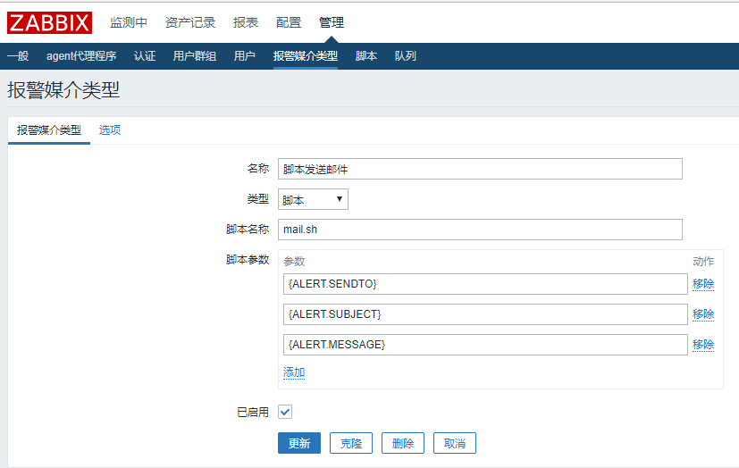
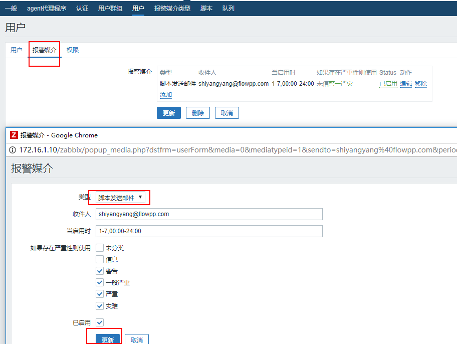
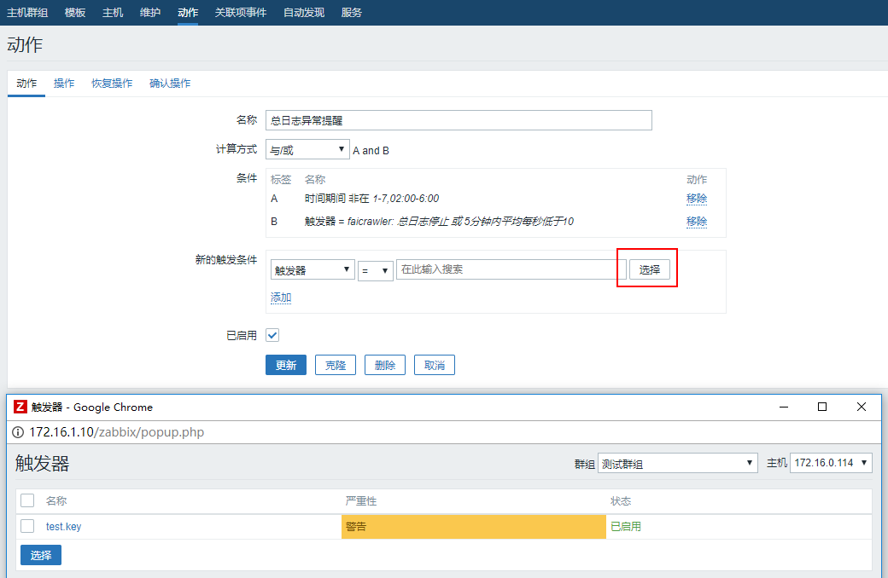
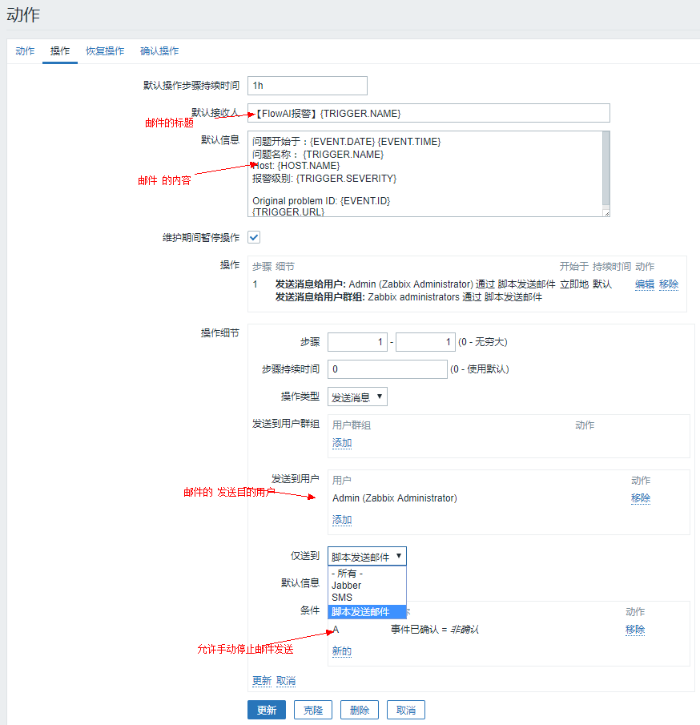

Zabbix创建报警
linux下配置邮件发送，结合Zabbix触发器触发报警邮件发送
2017/12/01
Zabbix创建报警
这里描述的创建报警包括两个部分的配置
- 报警媒介配置
- 创建动作
报警媒介配置
zabbix可选报警媒介的方式有好多种，我们这里只是针对通过 mailx 创建脚本进行邮件发送的配置
确认mailx安装成功以后，我们创建一个脚本将参数整理一下(zabbix服务运行脚本的时候参数设置要求)
放在 /etc/zabbix/zabbix_server.conf 配置的报警脚本存放文件夹 AlertScriptsPath=/usr/lib/zabbix/alertscripts
#!/bin/bash
to=$1
subject=$2
context=$3
echo -e "$context" | mailx -s "$subject" "$to"
测试一下: sh mail.sh xxx@xx.xx "title" "context"
回到web页面， 管理 -> 报警媒介类型 创建媒介类型

图中的参数名称可以参见:
用户报警媒介配置
报警媒介创建完成后， 通过用户列表进入用户配置

创建动作
从 配置 -> 动作 右上角进入创建动作， 串联之前的触发器 和 用户报警媒介

然后在操作中配置

完成以后记得启用动作